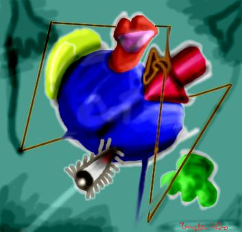

うそ。だまされないでね。

マタゴッチ シナウス 作
「二次元と六次元の融合期の愛情歌」
１９８８年作成。シナウスの後半期の作品である。シナウスの独特の特徴である、融合化の作品であり、最も代表的なものである。シナウスは後半期にかけて、ゴレファキッテ派の影響を受け初めていることをこの作品は象徴している。二次元と六次元の空間以上の融合にはテレスト的環境のもとでの円と空間が重要視され、その配合、融合に的確に象徴されている。また、人間の愚的順応を軽んじることを盲的感覚において、アッパラパー論からの記号化を表現し、唯我論の無機質的、自己究明内に関する、恐怖とスットコトンを考察している。やはり、投資家と消費者の階級差別に疑問を感銘していたことに絵画という物体としての媒体を養命酒している。つまり、合理的選択理論が純粋に形式的に定式化され、和式の便所は使いにくく、「揖保示的選好説」からみたお茶漬の食感を新たに、ナガタニエン要素から組み込まれたことに我々は感銘をうけ、ナンダカワカンネ派とシナウスの対立を第三者の立場から前向きに善処する方向へと考えつつもあった。また、イチゴポッキーは冷やして食べるとおいしいのである。
＜説明＞
わはは。さすがにこうなってくると怪しいと思うじゃろ。思わんやつは馬鹿みたいな値段の羽毛布団を買うことになるぞ。気をつけなされ。上の文章にははっきりいって、意味がない。内容もなく、言葉を伝えようという努力はまったくされてないんじゃ。しかし、これらを真実のように伝えるのも、またうその楽しみじゃ。しかし、このようなうそには大きな利点がある。それは、「人の見栄」がわかるということじゃ。この文章を「なるほど」とわかるはずのないことなのに、理解したような顔をする人間と「わかんね」と素直に感想をいう人間の二種類がわかるんじゃ。まあ、こういううそで、「見栄」をはるととんでもなく恥ずかしい思いをするから、気をつけるんじゃな。
しかし、「わたしぃ、ばかだからぁ、わかんなぁい。」というのも、悲しいもんじゃ。人というのは難しいもんじゃ。
次のうそ美術品